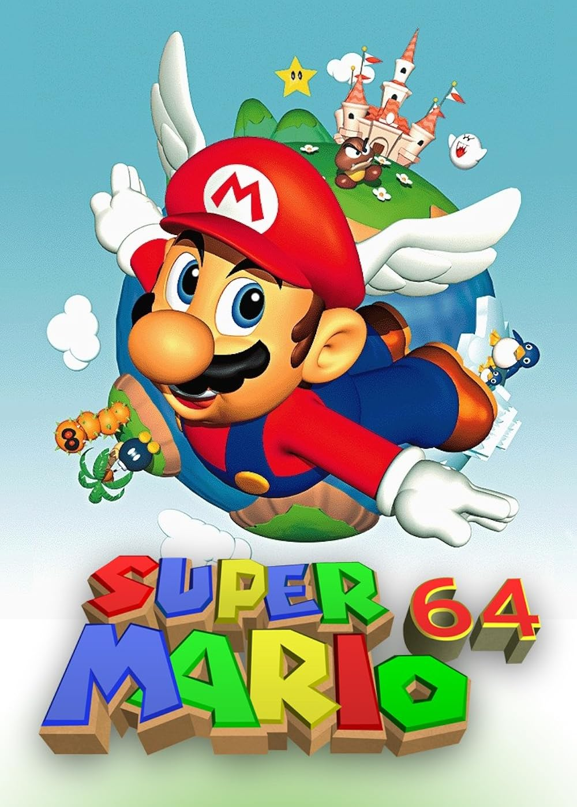

SUPER MARIO 64
12,99€
12,99€
G2A.COM Limited (comúnmente referido como G2A) es un mercado de comercio electrónico o marketplace digital global especializado en videojuegos o productos gaming. Su sede está en Hong Kong, y cuenta con oficinas en varios países incluyendo Polonia, Países Bajos y China.[1][2] El sitio afirma tener más de 12 millones de clientes, 260.000 vendedores, 50.000 productos digitales y 700 empleados en total.[3] El producto principal ofrecido en G2A son las claves de activación de juegos digitales para plataformas como Steam, Origin y Xbox. Es posible encontrar también otros productos, como software y códigos de prepago.